Introduction
Ce rapport accompagne le relevé d’audit effectué sur l’application iOS « Mobiliteit.lu ».
L’évaluation pour les applications mobiles consiste à vérifier l’ensemble des critères de la norme européenne d’accessibilité pour les produits et services EN 301 549 (v3.2.1). La méthodologie de test se base sur le Référentiel d’évaluation de l’accessibilité des applications mobiles (RAAM1).
L’audit a été réalisé à l’aide des technologies d’assistance disponibles, des tests de restitution avec le lecteur d’écran du système d’exploitation (VoiceOver sur iOS), ainsi que des tests d’adaptation des contenus en fonction des paramètres d’affichage utilisateurs.
- Version iOS lors de l’audit : 14.4
Échantillon
L’audit a été réalisé sur la version de l’application suivante :
- iOS : 6.2.8 (144)
L’audit a porté sur les écrans et parcours suivants :
| Nº écran | Titre de l’écran |
|---|---|
| E01 | Protection des données - Tutoriel |
| E02 | Accueil - Itinéraire voyage |
| E03 | Résultats de recherche |
| E04 | Détails du trajet |
| E05 | Détails itinéraire |
| E06 | Résultats détails arrêt |
| E07 | Création de compte |
| E08 | Alertes |
| E09 | Tarifs |
Accessibilité des parcours audités
L’application présente un niveau général d’accessibilité moyen.
Le niveau moyen de conformité au RAAM relevé atteint 37,93 % de conformité sur l’ensemble des écrans audités, avec 47,83 % de conformité au niveau simple A (A) et 0 % de conformité au niveau double A (AA).
L’application est non conforme.
Conformité RAAM de l’application
| Conforme | Non conforme | |
|---|---|---|
| A | 52,17% | 47,83% |
| AA (légal) | 41,38% | 58,62% |
Note sur le calcul de conformité
La conformité globale (Tableau « Conformité RAAM 1 ») est calculée de la manière suivante : C / (C+NC). C est le nombre de critères conformes et NC le nombre de critères non conformes.
C’est ce nombre qui constitue la référence légale. Il représente le taux de conformité de l’échantillon.
Il est normal que le taux de conformité global diffère sensiblement du taux de conformité par écran. En effet, un critère NC (non conforme) sur un écran rend le critère non conforme sur l’ensemble de l’échantillon.
Pour qu’une application soit conforme (100 % des critères applicables sont conformes au niveau AA), il est nécessaire que le taux de conformité par écran équivaille à 100 %.
Conformité pour chaque niveau
| Conforme | Non conforme | |
|---|---|---|
| A | 52,17% | 47,83% |
| AA | 0% | 100% |
Moyenne par écrans
| Nº écran | Titre d’écran | %C |
|---|---|---|
| E01 | Protection des données - Tutoriel | 50% |
| E02 | Accueil - itinéraire voyage | 54,55% |
| E03 | Résultats de recherche | 50% |
| E04 | Détail du trajet | 66,67% |
| E05 | Détail itinéraire | 86,67% |
| E06 | Résultats détail arrêt | 71,43% |
| E07 | Création de compte | 54,17% |
| E08 | Alertes | 75,00% |
| E09 | Tarifs | 93,33% |
Moyenne par thématiques
| Thématiques | C |
|---|---|
| Éléments graphiques | 50 % |
| Couleurs | 33,33 % |
| Multimédia | NA |
| Tableaux | NA |
| Composants interactifs | 33,33 % |
| Éléments obligatoires | 100 % |
| Structuration | 0 % |
| Présentation | 50 % |
| Formulaires | 33,33 % |
| Navigation | 33,33 % |
| Consultation | 50 % |
| Documentation et fonctionnalités d’accessibilité | NA |
| Services d’assistance | NA |
| Outils d'édition | NA |
| Communication en temps réel | NA |
Impacts utilisateurs
Les principales personnes impactées sont les personnes aveugles et celles qui naviguent au clavier. Les problèmes liés à la navigation rendent parfois difficile l’utilisation de l’application par ces utilisateurs.
Contenus dérogés
La dérogation est un moyen d’exclure du champ d’application du référentiel des contenus particuliers. Les cas de dérogations sont très encadrés, vous en trouverez le détail dans le guide des dérogations.
Les contenus suivants n’entrent pas dans le calcul de la conformité ni dans le périmètre des éléments à rendre accessible, ils sont dérogés :
- Les différentes cartes des trajets
Droit à la compensation
Les dérogations émises notamment pour charge disproportionnée demandent en contrepartie la mise en place d’un moyen de compensation pour les utilisateurs. Pour les documents bureautiques par exemple, vous devez fournir un moyen à l’utilisateur de demander une version accessible d’un document s’il en a besoin. Cela peut être un mail ou un formulaire de contact.
Note sur le relevé des non-conformités
Ne sont cités dans ce rapport que quelques exemples issus du relevé des non-conformités.
De plus, toutes les occurrences d’une non-conformité ne sont pas listées dans le relevé. Par exemple : pour les textes qui ne sont pas suffisamment contrastés, le relevé mentionne quelques occurrences, mais ne les cite pas tous.
Avis
Les non-conformités les plus bloquantes pour les utilisateurs concernent :
- L'état de certains boutons (plié/déplié) n'est pas restitué ;
- Certains écrans n'ont pas de titre ;
- Certains champs de formulaires ne sont pas correctement étiquetés, l’aide à la saisie est souvent absente ;
- La gestion du focus (ordre de navigation) n’est pas toujours cohérente au clavier ou au lecteur d'écran.
Ce sont donc ces points qui devront nécessiter une attention toute particulière et qui demanderont le plus d’efforts.
Annexe technique
Éléments graphiques
Recommandation
Identifier les éléments graphiques de décoration pour qu’ils soient ignorés par les technologies d’assistance. Donner à chaque élément graphique porteur d’information une alternative textuelle pertinente et une description détaillée si nécessaire. Remplacer les éléments graphiques textes par du texte stylé lorsque c’est possible.
Éléments graphiques de décoration
Un élément graphique de décoration ne contient aucune information indispensable à la compréhension du contenu auquel il est associé. Il est important que ces éléments graphiques ne soient pas restitués aux utilisateurs de technologies d’assistance, par exemple aux les aveugles qui se servent d'un lecteur d'écran.
Constats dans l’application
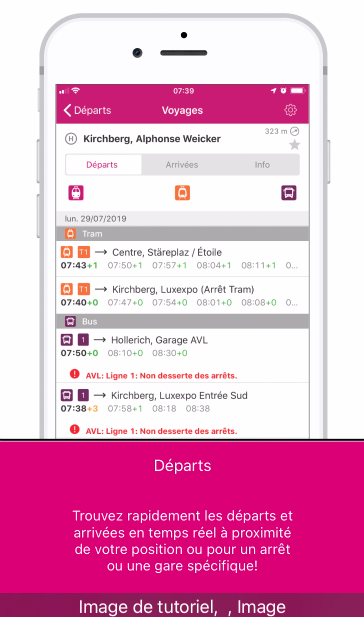Les images présentes dans le tutoriel ne sont pas ignorées par les technologies d'assistance. Un utilisateur de lecteur d'écran va atteindre ces images dont l'alternative n'apporte pas d'information, par exemple « Image de tutoriel ».
Couleurs
Recommandation
Ne pas donner l’information uniquement par la couleur et utiliser des contrastes de couleurs suffisamment élevés pour les textes et les composants d’interface et les éléments graphiques.
Contrastes des textes
Plusieurs couleurs présentent un rapport de contraste insuffisant, ce qui peut poser problème aux grands malvoyants et aux déficients visuels qui ont des difficultés à percevoir les couleurs ou les contrastes.
La norme distingue plusieurs tailles de textes à évaluer, chaque taille relevant d’un seuil de contraste. Ces tailles sont évaluées en pixel ou en point. Plus un texte est grand (supérieur à 18,5px avec effet de graisse ou 24px sans effet de graisse) moins le rapport requis est élevé (3:1).
Compte tenu de la difficulté à évaluer les tailles de polices sur mobile, tous les textes devraient être considérés en taille normale sauf pour des textes significativement très grands.
Les textes des applications doivent tous avoir un rapport de contraste de 4.5:1.
Vous pouvez foncer les couleurs pour obtenir le rapport de contraste exigé.
Constats dans l’application
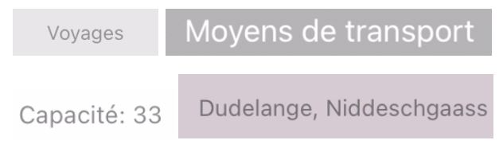De nombreux contrastes de textes ne sont pas suffisants, comme les textes gris #989599 sur fond gris clair #E8E5E8 (ratio de 2.4), les textes blancs sur fond gris #B5B2B5 (ratio de 2.1) ou encore les textes gris #7A7077 sur fond rosé #D8CAD3 (ratio de 3.1).
Contraste des composants d’interface
Les composants d’interface, les illustrations porteuses d’information ou encore les mises en couleurs porteuses d’information doivent être suffisamment contrastés pour être perçus par les utilisateurs ayant des troubles de perception des couleurs. Par exemple, une icône porteuse d’information devra avoir un rapport de contraste avec la couleur de fond de 3. De même, pour un champ de saisie de formulaire, dont la zone active est matérialisée par sa bordure, alors la couleur de cette bordure devra avoir un rapport de contraste de 3 avec la couleur de fond de l’écran.
Constats dans l’application
Certains composants ne sont pas suffisamment contrastés, comme l’icône d’ajout aux favoris (gris #D4D1D5 sur fond blanc, ratio de 1.5)
Composants interactifs
Recommandation :
Donner si nécessaire à chaque composant interactif une alternative pertinente. Rendre possible le contrôle de chaque composant interactif au moins par le clavier et la souris et s’assurer de leur compatibilité avec les technologies d’assistance. Identifier les messages de statut lorsque c’est nécessaire.
Rôle inapproprié ou non défini
Pour les aveugles et les grands malvoyants qui utilisent un lecteur d’écran, ce manque de distinction claire sur la nature des composants interactifs peut poser de graves problèmes.
En effet, le rôle du composant est annoncé par le lecteur d’écran, ce qui fournit une information contextuelle importante pour l’utilisateur qui peut déduire certaines actions possibles et s’attendre à certains événements.
Enfin, chaque composant interactif doit avoir un nom accessible défini soit par l’intermédiaire d’un texte (visible ou non) accessible aux technologies d’assistance).
Constats dans l’application
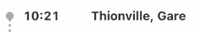Dans l'écran « Détail du trajet », tous les arrêts sont cliquables mais ceux-ci n'ont pas de rôle bouton défini.
Intitulé absent ou non pertinent
Pour chaque composant interactif, deux éléments sont à prendre en compte :
- Le nom accessible doit être pertinent ;
- Le nom visible doit être contenu dans le nom accessible.
Le nom accessible est le nom effectivement restitué par les technologies d’assistance comme le lecteur d’écran. Ce nom accessible est différent du nom visible dans les cas où l’application emploie certaines propriétés (comme les propriétés de nommage d’accessibilité des plateformes, dont le contenu n’est pas visible, mais est restitué par les lecteurs d’écran).
Constats dans l’application
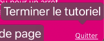Dans les pages du tutoriel, le nom accessible du bouton qui permet de quitter le tutoriel est « Terminer le tutoriel », alors que le nom visible est « Quitter ».
Clavier et dispositifs de pointage
Tous les éléments interactifs doivent être utilisables (atteignables et activables) par différents systèmes de pointage, par exemple : au toucher, avec un clavier externe (raccordement d’un clavier externe bluetooth ou USB et navigation avec les touches tabulation et flèches de direction), à la voix (VoiceControl sur iOS).
Constats dans l’application
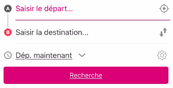Les champs de formulaire de recherche d'itinéraire ne sont pas atteignables au clavier, ni les éléments autour, on atteint seulement le bouton de géolocalisation.
Lecteur d’écran
Les composants interactifs doivent tous être accessibles au lecteur d’écran. Sous Android il s’agit de TalkBack et sous iOS, de VoiceOver.
Certains composants des interfaces de l’application ne sont pas atteignables avec le lecteur d’écran et d’autres sont atteignables, mais pas activables.
Constats dans l’application
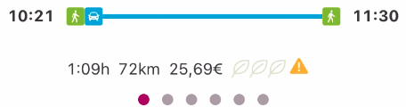Dans la page « Détail du trajet », au lecteur d'écran, il n'est pas possible d'atteindre le carrousel qui permet de passer d'un trajet à l'autre.
État des composants interactifs
Certains composants peuvent avoir un état, visuellement perceptible, mais non accessible aux utilisateurs aveugles. Par exemple, un bouton sélectionné/non sélectionné, ou un accordéon déplié/replié.
Constats dans l’application
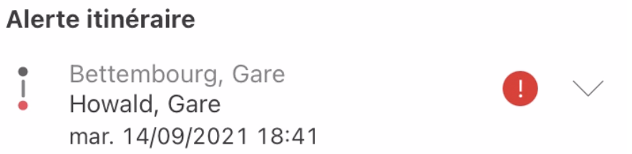Dans la page « Alertes », l'état masqué/affiché du composant qui permet d'afficher ou de masquer le message d'alerte n'est pas restitué.
Structuration de l’information
Recommandation
Utiliser des titres, des listes.
Titres
Le titrage des contenus est une étape importante dans la structuration de ces contenus. Cela répond à deux besoins :
- identifier rapidement un contenu recherché ;
- naviguer rapidement dans le contenu en se déplaçant de titre en titre.
Un titrage correct fournit à l’utilisateur d’un lecteur d’écran un plan du document et lui permet de naviguer de titre en titre pour se déplacer plus rapidement dans le contenu.
Constats dans l’application
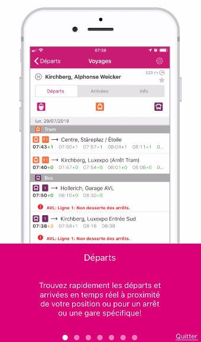Certains écrans ne sont pas structurés par des titres, comme dans la page de protection des données ou dans le tutoriel.
Présentation de l’information
Recommandation
Vérifier la prise en charge des paramètres de taille de police et l’effet de l’agrandissement des tailles des caractères sur la lisibilité. S’assurer que les composants sont correctement identifiables. S’assurer que l’information n’est pas donnée uniquement par la forme ou la position d’un élément.
Contenus visibles non accessibles
Certains textes des écrans visibles ne sont pas accessibles aux technologies d’assistance.
Constats dans l’application
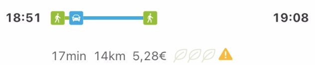Dans la page "Résultats de recherche", le nombre de kilomètres n'est pas restitué au lecteur d'écran , notamment pour les trajets en voiture.
Ordre réel des contenus
Certains utilisateurs comme les personnes aveugles vont parcourir les contenus dans l’ordre dans lequel ils sont déclarés dans l’application, indépendamment de l’ordre visuel dans la présentation à l’écran. Il est important que cet ordre soit logique et cohérent pour éviter les pertes d’informations et les incompréhensions.
On teste l’ordre réel des contenus en naviguant avec un lecteur d’écran.
Constats dans l’application
Au lecteur d'écran, dans les pages du tutoriel, on atteint d'abord le bouton de fermeture du tutoriel, puis le carrousel qui permet de passer d'un écran à l'autre.
Agrandissement des textes
Certaines personnes déficientes visuelles, également des personnes ayant des difficultés de lecture comme les personnes dyslexiques, ont besoin d’adapter la taille du texte à l’écran.
L’agrandissement des caractères ne doit pas provoquer de perte d’informations. À 200%, le contenu doit rester lisible et compréhensible, toutes les informations doivent rester présentes.
L’utilisateur spécifie la taille des caractères au niveau de la plateforme, en utilisant les paramètres de présentation système.
Constats dans l’application
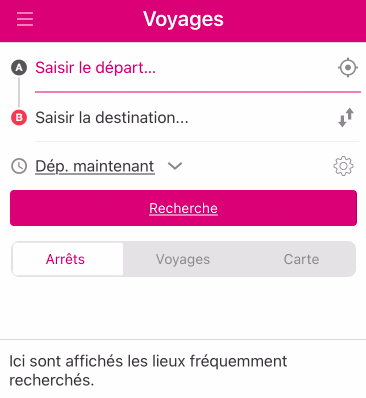Aucun texte de l'application n'a un effet d'agrandissement à 200%.
Contenus cachés destinés à être rendus visibles par une action de l’utilisateur
Lorsque des contenus masqués sont affichés sur une action de l’utilisateur, en cliquant sur un bouton, il est important que le bouton soit situé dans le code avant la zone dont il contrôle l’affichage.
Si ce n’est pas le cas, certains utilisateurs comme les personnes aveugles par exemple qui accèdent au contenu de manière séquentielle, pourraient ne pas comprendre où se trouve le contenu affiché.
S’il n’est pas possible que l’élément déclenchant soit situé dans le code avant la zone contrôlée, alors un déplacement du focus peut répondre au même objectif.
Constats dans l’application
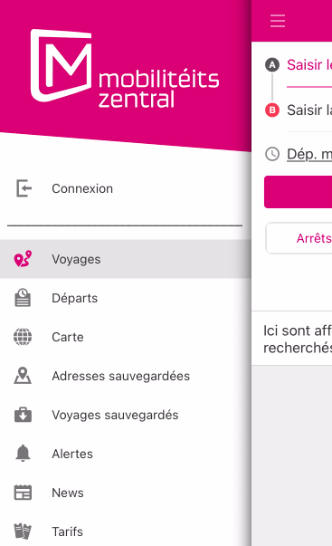Lorsque l'on active le bouton pour ouvrir le menu, le focus ne se place pas dans le premier élément du menu nouvellement affiché.
Formulaires
Recommandation :
Associer pour chaque formulaire chacun de ses champs à son étiquette, grouper les champs dans des blocs d’informations de même nature, donner à chaque bouton un intitulé explicite. Vérifier la présence d’aide à la saisie, s’assurer que le contrôle de saisie est accessible et que l’utilisateur peut contrôler les données à caractère financier, juridique ou personnel.
Étiquettes et champs
Les champs de formulaires doivent tous posséder des étiquettes correctement reliées.
Une étiquette de champ est un texte situé à proximité du champ de formulaire qui permet de connaître la nature, le type ou le format des informations attendues.
De cette manière, lorsqu’un utilisateur entre dans le champ de saisie avec un lecteur d’écran, le lecteur d’écran lit le contenu de l’étiquette. L’utilisateur comprend alors ce qu’il doit saisir.
Sans cela, même si une étiquette est présente visuellement, l’utilisateur entendra « champ de saisie vide » en entrant dans le champ et ne saura donc pas quoi saisir.
Constats dans l’application
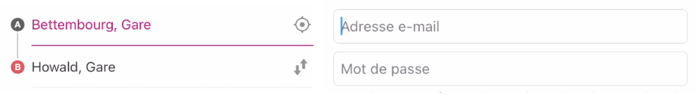Il n'y a pas d'étiquette visible sur les champs de recherche d'itinéraire, même chose sur le formulaire de création de compte.
Contrôle de saisie et aide à la saisie
Tous les champs obligatoires doivent être identifiés préalablement à toute validation de l’utilisateur.
Pour les champs qui attendent un format de saisie particulier pour être validés, ce format doit être spécifié à l’utilisateur par un passage de texte visible à proximité du champ. De plus, si l’utilisateur commet une erreur sur ce champ, alors le message d’erreur doit présenter un exemple réel de saisie.
Enfin, les messages d’erreur de saisie des champs de formulaire doivent être liés correctement aux champs en erreur.
Constats dans l’application
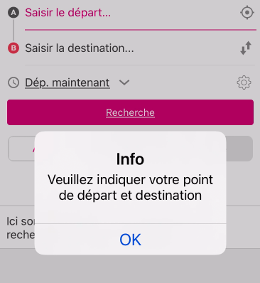Les champs obligatoires ne sont pas indiqués dans le formulaire de recherche d'itinéraire. De plus, lorsque le formulaire est envoyé avec des erreurs, le message d’erreur n'est pas visible à proximité du champ, il apparaît dans une modale.
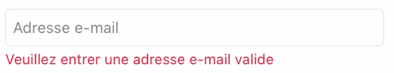Dans le formulaire de création de compte, les champs obligatoires et le format de saisie attendu pour le champ "email" ne sont pas indiqués.
Indication de la nature des saisies
La saisie d’un formulaire peut être particulièrement laborieuse et nécessiter des charges de travail considérables pour certains utilisateurs qui vont utiliser des technologies d’assistance très complexes ou qui ne sont pas capables de comprendre les types de données attendues.
Identifier les champs de saisie pour permettre leur remplissage automatique est bénéfique pour certains utilisateurs.
Ces indications peuvent être utilisées par la plateforme pour proposer des fonctionnalités de remplissage automatique des champs ainsi identifiés et également pour disposer des contrôles adéquats pour remplir les champs (clavier numérique par exemple). Ce dispositif peut être d’une aide considérable pour les utilisateurs. Cela concerne plus spécifiquement les données à caractère personnel.
Constats dans l’application
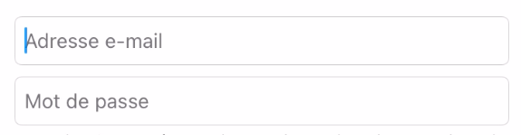Dans le formulaire de création de compte, aucune valeur n'est suggérée pour le champ "email".
Navigation
Recommandation :
S’assurer que l’ordre de tabulation est cohérent et que l’écran ne comporte pas de piège au clavier. S’assurer que les raccourcis clavier qui utilisent une seule touche sont contrôlables par l’utilisateur.
Ordre de tabulation
La navigation dans les contenus peut être considérablement compliquée pour les personnes aveugles ou les personnes handicapées motrices qui naviguent au clavier si l’ordre de tabulation n’est pas cohérent.
L’ordre de tabulation ne suit pas forcément l’ordre de lecture de l’écran, mais il doit être cohérent en fonction de la nature des contenus et des fonctionnalités.
Constats dans l’application
Au clavier, dans les pages du tutoriel, on atteint d'abord le bouton de fermeture du tutoriel, puis le carrousel.
Consultation
Recommandation
Vérifier que l’utilisateur a le contrôle des procédés de rafraîchissement, des changements brusques de luminosité et des contenus en mouvement ou clignotants. Ne pas faire dépendre l’accomplissement d’une tâche d’une limite de temps sauf si elle est essentielle et s’assurer que les données saisies sont récupérées après une interruption de session authentifiée. Proposer des versions accessibles ou rendre accessibles les documents en téléchargement. S’assurer que la consultation n’est pas dépendante de l’orientation de l’écran. Toujours proposer un geste simple en alternative d’un geste complexe permettant de réaliser une action.
Consultation des contenus indépendante de l’orientation
Certaines personnes handicapées motrices peuvent utiliser des périphériques dont elles ne peuvent pas contrôler l’orientation. Par exemple les personnes qui utilisent des contacteurs pour interagir avec le périphérique de consultation. D’autres, comme les personnes déficientes visuelles peuvent avoir besoin de forcer un mode d’affichage (paysage par exemple) pour pouvoir bénéficier des fonctionnalités d’agrandissement des caractères.
Il est donc nécessaire que les applications :
- Ne bloquent pas l’orientation sur un mode portrait ou paysage ;
- S’assurent que les contenus sont consultables dans les deux modes d’affichage.
Constats dans l’application
L'application est entièrement bloquée en mode portrait.